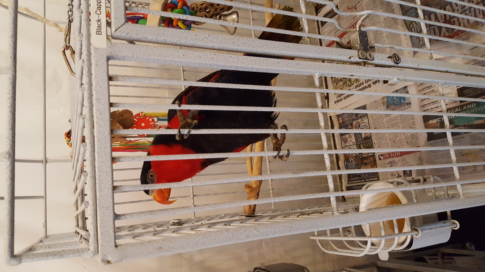
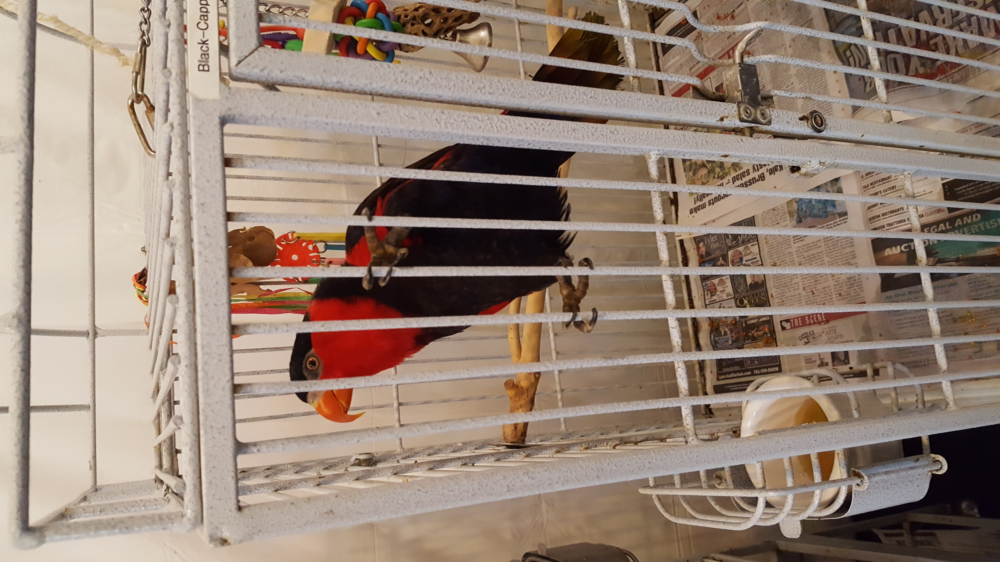
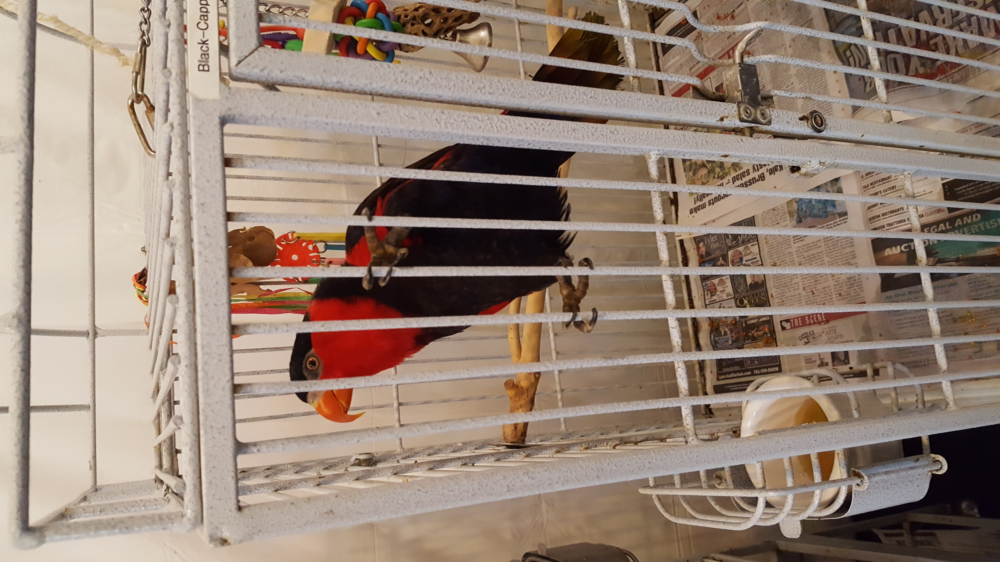
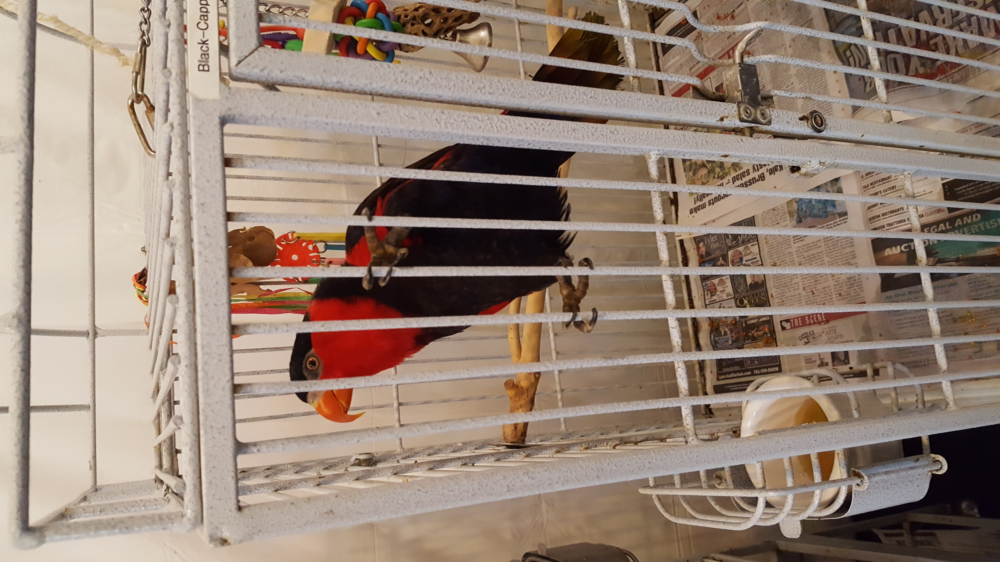

These beauties were all from Rhode Island Parrot Rescue in Warwick, RI!
 


What is Rhode Island Parrot Rescue?
 

Rhode Island Parrot Rescue houses all sorts of parrots and lorikeets that, for whatever reason, could no longer be taken care of by their previous owner. The reasons for this vary. Sometimes the birds were never treated right, sometimes they were taken from the wild, and sometimes their owners simply could not afford to take care of them. One of the more common issues is the birds outliving their owners, as some parrots can have almost human-like lifespans.
You can learn more about the rescue here.